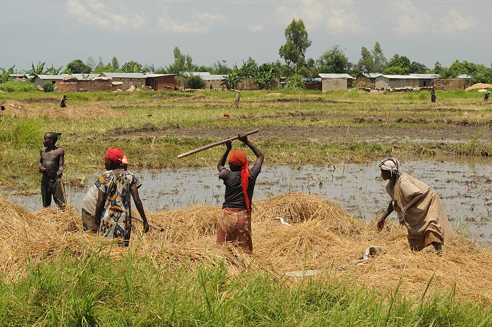

饭碗到米厂
约翰有12个孩子。他记得，从前一家人一天能吃上两顿饭就很不容易。几年后，中国农业专家杨华德带记者回访林格四村，指给记者看约翰新盖的楼。楼对面是约翰办的大米加工厂。

2018年，专家组在布班扎省基航佳县的林格四村启动杂交水稻减贫示范项目，给农户提供首季生产投入和田间技术指导。他们选出当地青年带头人，再通过合作社把技术教给更多种田的人。
- 种上杂交水稻
- 134户
- 水稻单产增幅
- 136%
约翰说，现在一家人顿顿能吃饱，孩子也都上了学。他从种水稻做到了加工。专家组去其他村继续示范时，也沿用了培养当地带头人的办法。
正确义利观与自主发展
首季投入帮农户把稻子种起来，合作社和本地带头人让更多人学会怎么种。从增产到办米厂，约翰自己决定下一步怎么走。从正确义利观来看，合作成效要看当地农户得到了什么，也要看他们今后能做什么。
